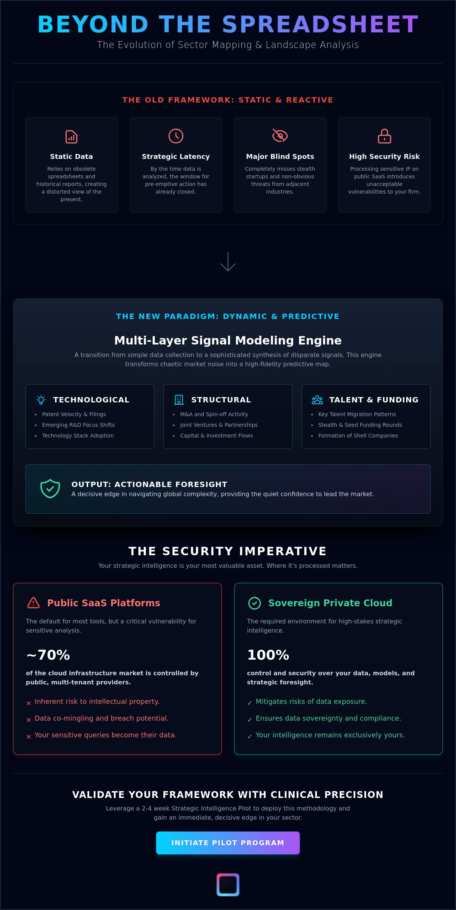

Most market maps are obsolete before the PDF is even exported. Traditional sector mapping & landscape analysis often fails because it relies on static, historical data, leaving leaders blind to the invisible signals that precede market crystallization. You've likely experienced the frustration of information overload from generic reports and the strategic latency that allows competitors to move first.
It's a high-stakes environment where processing sensitive intelligence on public SaaS, which currently controls nearly 70% of the infrastructure market, introduces unacceptable security risks to your firm's intellectual property. You'll master the methodology of multi-layer signal modeling to identify emerging market shifts and acquisition targets with clinical precision.
Key Takeaways
- Transition from static spreadsheets to dynamic intelligence layers to eliminate strategic latency.
- Architect a multi-layer signal modeling system that synthesizes talent migration, patent filings, and stealth funding.
- Deploy precise methodologies to detect stealth startups and non-obvious competitors before they disrupt your vertical.
- Secure your strategic intelligence in sovereign, private cloud environments to mitigate inherent risks of public platforms.
- Leverage a 2-4 week Strategic Intelligence Pilot to validate your framework with clinical precision.
The Evolution of Sector Mapping: From Static Lists to Signal Intelligence
Sector mapping & landscape analysis has evolved beyond the constraints of the static spreadsheet. In high-stakes environments, a list is merely a historical artifact. True intelligence functions as a dynamic layer that sits above the noise of raw data. It tracks the movement of capital, talent, and technology in real time. Traditional "top-down" research models often create strategic latency. By the time a market report is published, the window for a pre-emptive acquisition or a defensive pivot has often closed. You cannot lead a market by looking in the rearview mirror.
The Limitations of Traditional Analysis
Traditional methods rely heavily on lagging indicators. Historical revenue, public filings, and quarterly earnings provide a perspective on what has already occurred. This creates a significant "Blind Spot" for executive leadership. Stealth startups and cross-sector threats don't appear in public filings until they've already gained significant momentum.
Multi-Layer Signal Modeling: The Engine of Advanced Sector Analysis
Keyword-based searching is a reactive process. It limits your visibility to what's already been documented, indexed, and discussed. Advanced sector mapping & landscape analysis requires a transition from simple information retrieval to sophisticated multi-layer signal modeling. This methodology builds a mathematical representation of market dynamics to reveal the invisible structures of competition.
Primary Signal Layers
Effective modeling categorizes inputs into distinct layers:
- Structural signals: Focus on deployment of capital through M&A activity, spin-offs, and joint ventures.
- Technological signals: Track patent velocity and R&D focus shifts to see what a company will dominate tomorrow.
- Operational signals: Monitor talent acquisition patterns—tracking where specialized engineers and leaders are moving.
Detecting Stealth Targets and Emerging Competitive Dynamics
Most organizations treat sector mapping as a search for known entities. This approach fails to account for stealth startups that intentionally avoid public detection. Advanced landscape analysis utilizes rigorous M&A Watchlist & Monitoring to identify potential acquisition targets up to 90 days before a transaction is formally announced.
The Stealth Detection Framework
Detecting stealth activity requires three steps: First, identify foundational signal clusters (e.g., principal engineers leaving a leader for an unnamed entity). Second, map the network of investors backing "NewCo" entities. Third, analyze infrastructure and domain acquisition patterns that reveal the intended scale of a hidden player.

The Security Imperative: Private Cloud vs. Public SaaS
Strategic intelligence demands absolute data sovereignty. Processing sensitive inputs on public multi-tenant SaaS is a strategic liability. Public platforms often utilize shared AI training models, creating a silent channel for data leakage. Your specific queries could inadvertently inform the platform's broader knowledge base, effectively "tipping your hand" to the market.
- Vulnerability to multi-tenant breaches.
- Involuntary data contribution to shared AI models.
- Strategic hand-tipping through metadata analysis.
Executing the Strategic Intelligence Pilot with Nexial
Transitioning to operational reality requires a structured entry point. A 2-4 week Strategic Intelligence Pilot serves as this bridge. The process begins with rigorous scope definition, followed by signal calibration to align with your unique strategic goals. The pilot culminates in the delivery of a high-fidelity sector map and a comprehensive signal model.